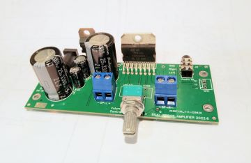
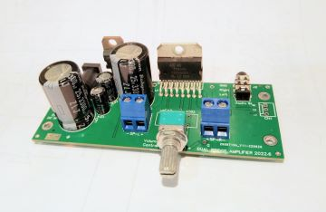

Mini Stereo Amplifier (TDA7266, TDA7294, STA540)
A mini, powerful, stable, low noise, dual bridge power amp with high current ripple filter.

project. i like to build high quality audio amplifier.
A mini, powerful, stable, low noise, dual bridge power amp with high current ripple filter.

A ripple filter for power amplifiers.

Choosing and Using Bypass Capacitors
Capacitor internal resistance curves under different capacitance